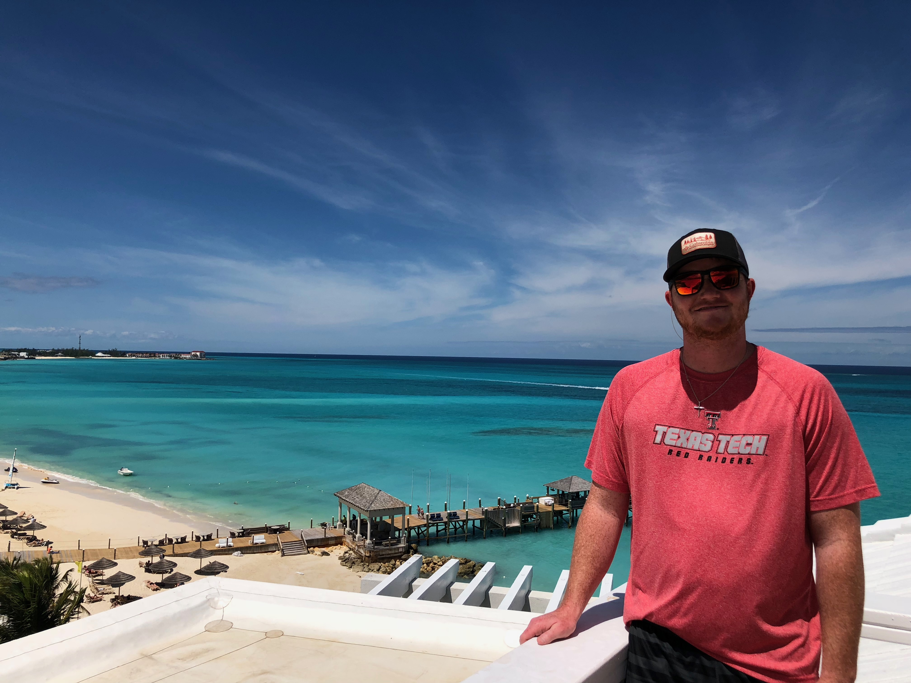

<!DOCTYPE html>
<html>
  <head>
    <meta charset="utf-8">
    <meta name="viewport" content="width=device-width">
    <title>repl.it</title>
    <link href="style.css" rel="stylesheet" type="text/css" />
  </head>
  <body>
    <script src="script.js"></script>
  </body>
</html>

<body>
  <div class="box border-box">
    <h1> Ryan Lawson</h1>
    <h3> Software Devoloper</h3>
    </div>
    <hr>


<div class="imageContainer">
<article>
    <h3>Hello, Im Ryan Lawson</h3>
      </article>
    <!--this is where ill put my picture-->
     
    </div>
    <p> I am a student of software development through thinkful, while living in Lubbock Texas.</p>
    <p> as a current contractor in construction im interested in</p>
    <ul>
      <li>Getting back into coding</li>
      <li>Meeting and learning from other developers</li>
      <li>Creating and making quality code</li>
<hr>
<section>
<h3> About me</h3>
</section>
<p> After being out of the software and coding world for some time, I decided I wanted to jump back into it and pick up where I left off.
  <p> After spending some time in the oil and gas industry I decided i wanted to gain the knowledge in a carrer that I dont have to worry about being so up and down.</p>
   <p> As a student at thinkful I have begun this challenging journey to become a software engineer and I could'nt be happier.</p>
   <p> If you are looking to hire a new developer for your company than I feel like I could be a perfect fit for your organization.</p>
   <hr>
   <h2> Contact Ryan</h2>
   <p> Id love to hear from you, please feel free to contact or follow me.</p>
<ol>
  <li>
<a href="https://www.linkedin.com/in/ryan-lawson-80a760123/">
Linkedin</a></li>
  <li><a href="https://github.com/TheLawdawg08">Github</a></li>